검토용 · 시연 예시 자료만 (실제 고객 정보 없음) · 2026-11-28 기준 시연판
디어 상담 데스크 · 시연판 검토 자료
부천 상동역 롯데캐슬 시그니처(1,859세대) 분양 현장에서 분양상담사(40~60대 · 프리랜서 3.3% 위촉)가 와이파이 전용 안드로이드 태블릿(상담석에서 고객과 같이 봄)과 개인 휴대폰으로 쓰는 상담 웹앱입니다. 실제 시연판은 상담사 전용(접속 코드 · 암호화)이라 외부에서 열리지 않아, 화면 25장과 설명을 이 한 페이지에 모았습니다. 운영: 디어 에듀테크((주)디어) · 구조: GitHub Pages 정적 사이트 + Google Apps Script(구글 시트) 서버.
- B to C: 상담사 개인 · 팀장까지 (대행사 · 시행사 B2B는 다음 단계)
- 꼭 지키는 원칙: 공식 자료(입주자모집공고 · 법령 · 정부 발표)만 근거 · 고객 화면에 잔여 세대 · 창 예측 없음 · 고객 이름 · 번호는 고객이 직접 넣고 동의한 경우만 · 광고는 동의자에게만 (광고) 표시 · 수신거부 · 야간 금지 · ‘출근’ 대신 ‘업무 개시 체크인’(근로자성 분쟁 방어)
- 상담 흐름: 인사 → 우리 가족 → 단지 · 동 → 타입 → 호실 · 층 → 자금 → 결정 → 고객 휴대폰으로 보내기 → 고객이 보관(동의) → 내 고객 명단 → 나중에 안내
- 40~60대 기술 초보 상담사가 쓰기에 어려운 화면 · 버튼 · 용어는 어디인가?
- 고객과 같이 보는 화면에서 고객이 헷갈리거나 불편할 부분은?
- ‘고객 휴대폰으로 보내기 → 보관(동의) → 내 고객 → 안내’ 흐름에서 빠진 단계나 법적 위험은?
- 현장 단계(초기 · 중기 · 후기)별 화법 · ‘같은 돈 다른 선택’ 브리핑이 설득력 있고 객관적인가?
- 계획 중인 UI 개편(아래)이 맞는 방향인가?
- 탭 4개로 단순화: 오늘 · 상담 · 내 고객 · 알림 (나머지는 더보기)
- 한 화면 한 가지 일 · 큰 주 버튼 1개 · 태블릿 본문 20~22px · 금액 32px+ · 버튼 56~64px
- 고객과 같이 보는 화면 / 상담사 전용 화면 분리 · Pretendard 한 서체 · 무채색 + 포인트 1색
- 상담 데스크 첫 화면 (상담 탭)
- 고객 관리 탭
- 준비 자료 탭 (고객에게 보이지 않는 자료)
- 내 정보 탭
- 응대 순서 고르기 (튜토리얼 ②)
- 상담 화면 ① 인사
- 상담 화면 · 후보가 담긴 상태
- 상담사 메모 · 현장 단계 화법
- 📊 같은 돈, 다른 선택 (중기 브리핑)
- ⭐ 상담사 추천 호실 정하기
- 📲 고객 휴대폰으로 보내기 (모든 자료 공통)
- 고객 결과지
- 📥 휴대폰에 보관 (고객 본인 입력 · 동의)
- 👥 내 고객
- 📨 고른 고객에게 안내 보내기
- 📞 전화 응대
- 워킹 대기 순번
- 팝업 알림
- 현장 단계 · 상담 화법
- 인근 단지 비교표
- 공지사항 · 날짜별 보관함
- 수수료 청구서 (예시 양식)
- 🔔 알림 설정 · 어디서든 받기
- 🗂 상담 고객 보관함
- 휴대폰 첫 화면
01 · 상담사 · 태블릿
상담 데스크 첫 화면 (상담 탭)
하루 업무의 출발점.
- 오늘의 개인정보 수칙(하루 한 번 확인)
- 🖥 업무 개시 체크인 (책상 태블릿에서만 · 워킹 · 상담 배정 활성화)
- 나는 지금 몇 대기 · 현장 단계(중기) · 전화 응대 바로가기
- 알림 띠(팀장 승인 요청 · 다시 나온 호실 등)
- 큰 버튼: 새 고객 상담 시작 · 2차 고객 이어하기 · 고객에게 QR 보여 주기
- 🚪 고객 맞이 · 어디부터 보여 드릴까요? · ⭐ 상담사 추천 호실만 보내기
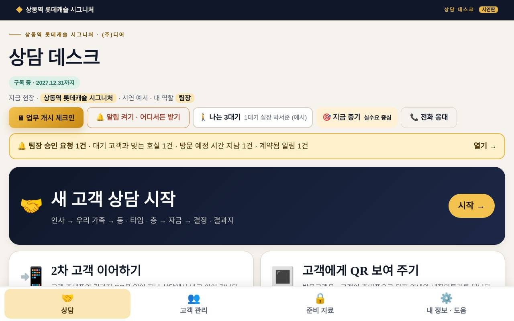
02 · 상담사 · 태블릿
고객 관리 탭
고객 · 팀 운영 기능 모음.
- 👥 내 고객 · 🗂 상담 고객 보관함 · 현장 단계 · 상담 화법
- 공지사항 · 워킹 대기 순번 · 전화 응대 · 광고 기록 · 팀 상담 요약 · 대기 고객 · 호실 진행
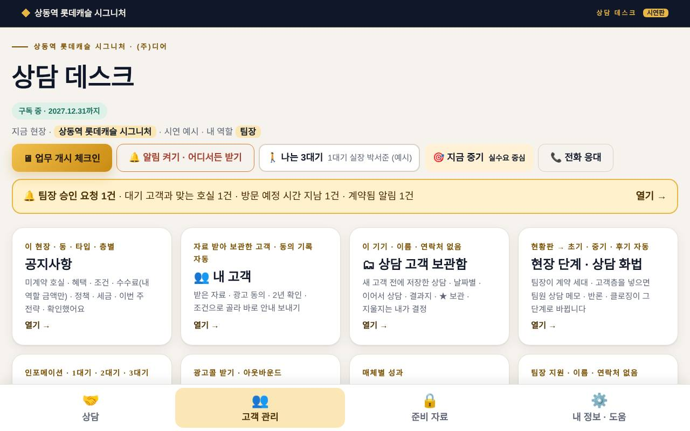
03 · 상담사 · 태블릿
준비 자료 탭 (고객에게 보이지 않는 자료)
상담 전 준비.
- 상담 튜토리얼 ② · 응대 순서 고르기
- 인근 단지 비교표 · 현황판 · 창밖 참고 · 혜택 · 근거 자료
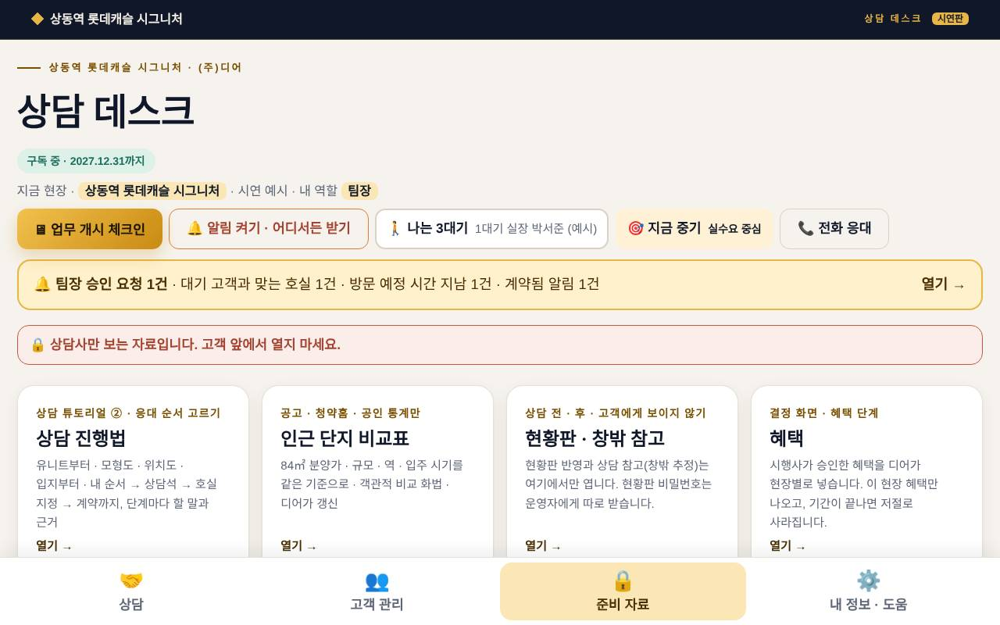
04 · 상담사 · 태블릿
내 정보 탭
개인 설정 · 정산.
- 🔔 알림 설정 · 수수료 · 청구 · 튜토리얼 ① · 보안교육 · 설정 · PIN
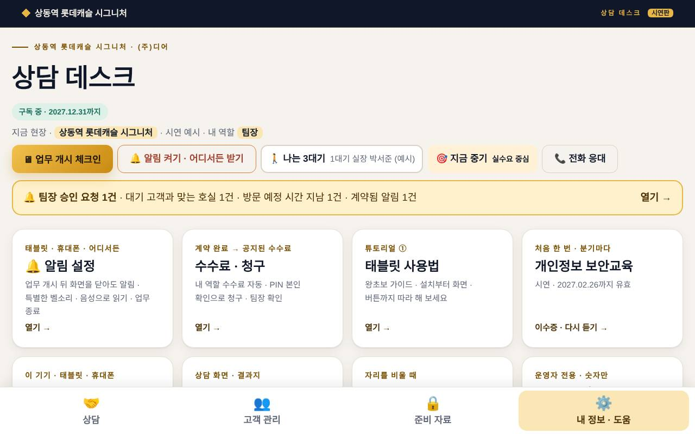
05 · 상담사
응대 순서 고르기 (튜토리얼 ②)
상담사마다 응대 순서가 달라 고객이 오면 버튼으로 고름.
- 유니트 · 타입부터 / 모형도 · 위치도 · 입지부터 / 내 순서(▲▼로 바꾸고 기본 저장)
- 고르면 아래 튜토리얼 단계 순서 · 번호가 그대로 바뀜
- 현장 단계에 맞는 추천 표시(중기 추천)
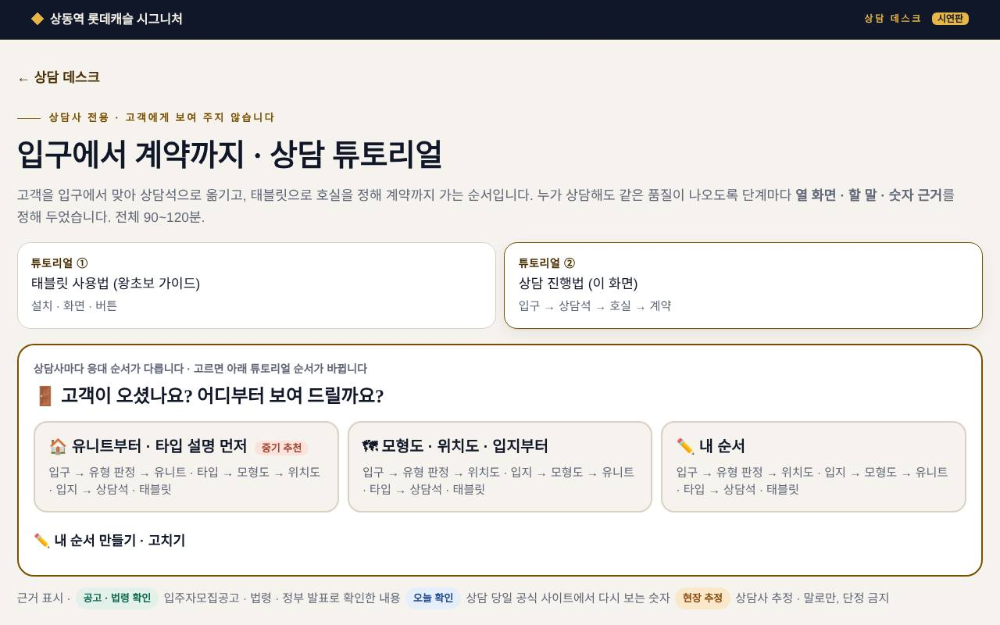
06 · 고객과 같이 보는 화면 · 태블릿
상담 화면 ① 인사
고객과 나란히 앉아 보는 상담 흐름의 시작.
- 상단 1~7 단계(인사 · 우리 가족 · 단지 · 동 · 타입 · 호실 · 층 · 자금 · 결정)
- 글씨 크기(보통 · 크게 · 아주 크게) · 화면 색 · 유입 매체 선택
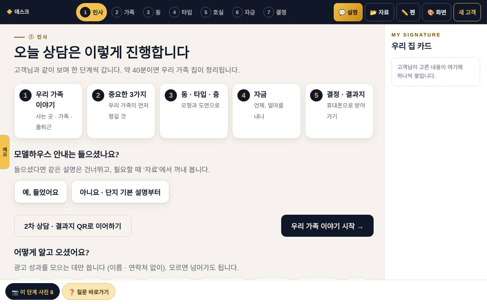
07 · 고객과 같이 보는 화면
상담 화면 · 후보가 담긴 상태
시연 고객(40대 맞벌이 + 초등 2명)으로 1 · 2 · 3순위가 담긴 상태.
- 오른쪽 우리 집 카드(후보 · 중요한 3가지)
- 결정 단계에서 모형 앞 · 둘 중 하나 · 혜택 · 일정 · 결과지 보내기
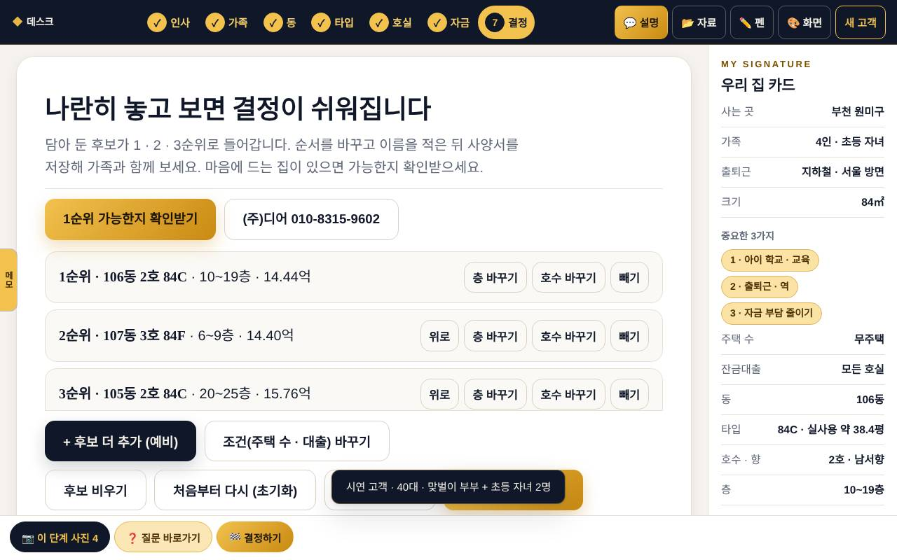
08 · 상담사만 (왼쪽 서랍)
상담사 메모 · 현장 단계 화법
현황판 판매 단계(초기 · 중기 · 후기)에 따라 상담 화법이 자동으로 바뀜.
- 지금 중기 · 고객 머릿속 질문(로열층은 다 빠졌다던데?)
- 이 상담 단계에서 할 말 · 하지 않는 말
- 📊 같은 돈 다른 선택 · ⭐ 상담사 추천 호실 정하기 버튼
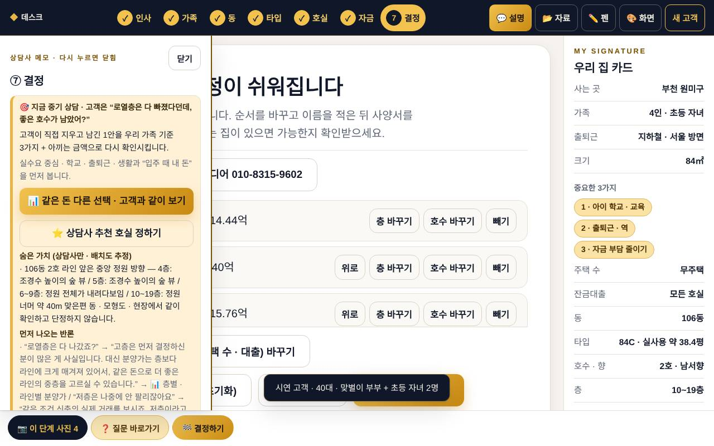
09 · 고객과 같이 보는 화면
📊 같은 돈, 다른 선택 (중기 브리핑)
분양가는 단지 총액을 동 · 층 · 향 · 라인으로 나눈 값 → 같은 예산의 다른 선택을 숫자로.
- 고른 라인의 층별 분양가 · 맨 위층보다 얼마 낮은지 (입주자모집공고 공급금액표)
- 같은 층대 라인별 차이
- 같은 조건 신축(대장 단지) 84㎡ 층대별 실거래 · 저층이 고층보다 비싸게 거래된 사례 · “앞으로의 가격을 뜻하지 않음” 고지
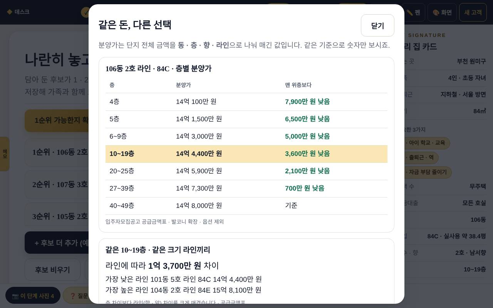
10 · 상담사
⭐ 상담사 추천 호실 정하기
고객 1 · 2 · 3순위와 따로, 상담사가 콕 집은 한 호실과 이유.
- 동 · 라인 · 층 → 호수 · 분양가 자동
- 추천 이유 자동 제안(공급금액표 · 우리 가족 기준 · 배치도) 최대 3개 · 한마디
- 현황판 계약 완료 층은 추천 불가
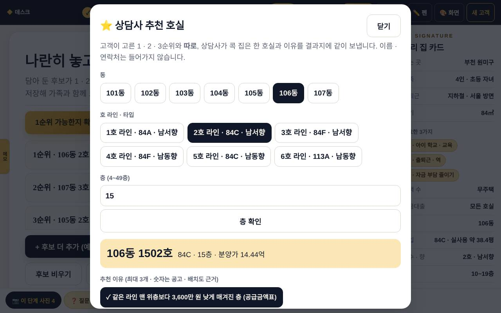
11 · 상담사 · 태블릿 (고객이 찍음)
📲 고객 휴대폰으로 보내기 (모든 자료 공통)
결과지 · 추천 호실 · 단지 안내 · 방문 확정을 같은 화면으로.
- 고객이 태블릿 QR을 직접 찍음 → 자료가 바로 열림
- 전화 중이면 번호만 넣고 문자 앱 열기(휴대폰) / 내 휴대폰으로 넘기기 QR(태블릿)
- 고객이 열면 ‘열람’, 보관하면 ‘보관 · 광고 동의’가 실시간 표시
- 다른 방법(이메일 · 가족에게 · 팀장 요약)은 아래 버튼
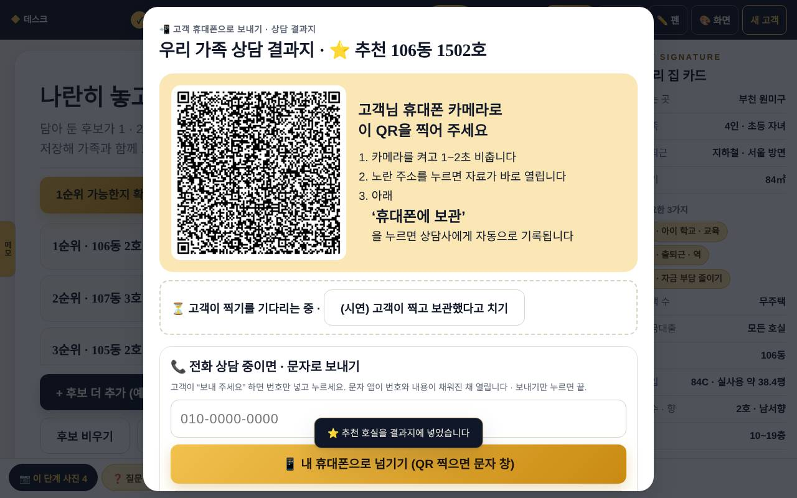
12 · 고객 휴대폰
고객 결과지
고객이 QR로 연 결과지(이름 · 연락처 없음).
- 한 줄 요약 · 중요한 3가지 · 1 · 2 · 3순위 카드
- ⭐ 상담사 추천 호실 카드 · 모형 사진 · 배치도 표시
- 납부 일정 · 가족과 함께 보기 · 2차 상담 QR

13 · 고객 휴대폰
📥 휴대폰에 보관 (고객 본인 입력 · 동의)
자료 아래에서 고객이 직접 이름 · 번호 · 동의를 넣으면 상담사 명단에 자동 기록.
- [필수] 개인정보 수집 · 이용 / [선택] 분양 홍보 · 판매 권유 목적 이용 / [선택] 광고성 정보 수신(문자 · 카톡 · 전화 각각) · 모두 꺼진 채 시작
- 안 해도 자료는 그대로 봄 · 완료 화면에 동의 날짜 · 수신거부 길
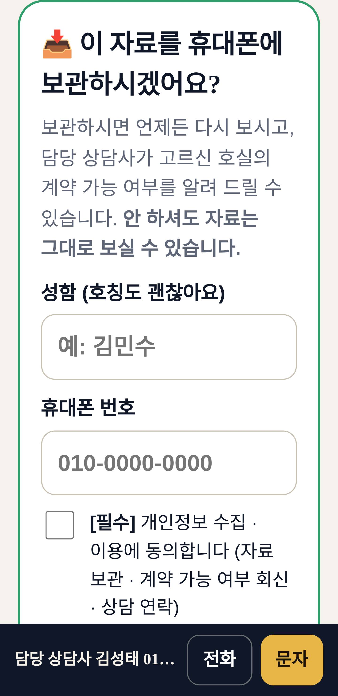
14 · 상담사
👥 내 고객
자료를 받아 보관한 고객 명단 · 동의 · 받은 자료가 함께 정리.
- 요약: 보관한 고객 · 광고 문자 가능 · 2년 동의 확인 임박 · 자료만 열고 보관 안 함
- 필터(광고 동의 · 84 · 113/121 · 최근 7일 · 수신거부) · 고객 카드(받은 자료 · 열람 · 동의 배지 · 2년 D-day)
- 자료 다시 보내기 · 전화 · 문자(휴대폰)
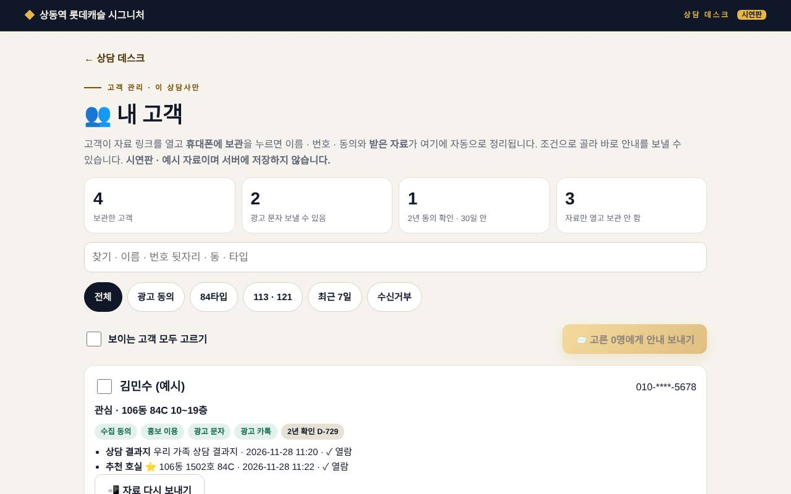
15 · 상담사
📨 고른 고객에게 안내 보내기
정보성 / 광고성 구분 · 광고는 동의한 고객만 자동으로 남김.
- 제외 인원 표시(동의 없음 · 홍보 이용 미동의 · 수신거부 · 2년 지남)
- (광고) 표시 · 무료 수신거부 문구 자동 · 밤 9시 ~ 아침 8시 버튼 막힘
- 휴대폰 문자 앱으로 20명씩(문자 서비스 연결 시 자동 일괄 발송 · 2단계)
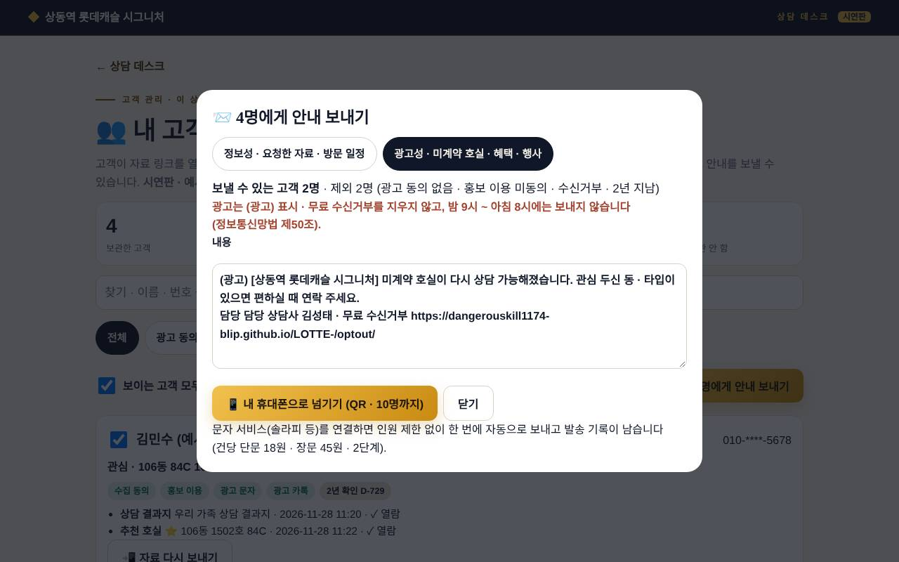
16 · 상담사
📞 전화 응대
광고 전화 받기 · 아웃바운드 순서대로 할 말 · 결과 기록.
- 어디서 보셨는지(매체) · 방문 약속 멘트
- 📲 고객 휴대폰으로 보내기(자료 고르기) · ⭐ 추천 호실 보내기
- 통화 결과 남기기 → 광고 기록에 자동 합산(고객 이름 · 번호 저장 안 함)
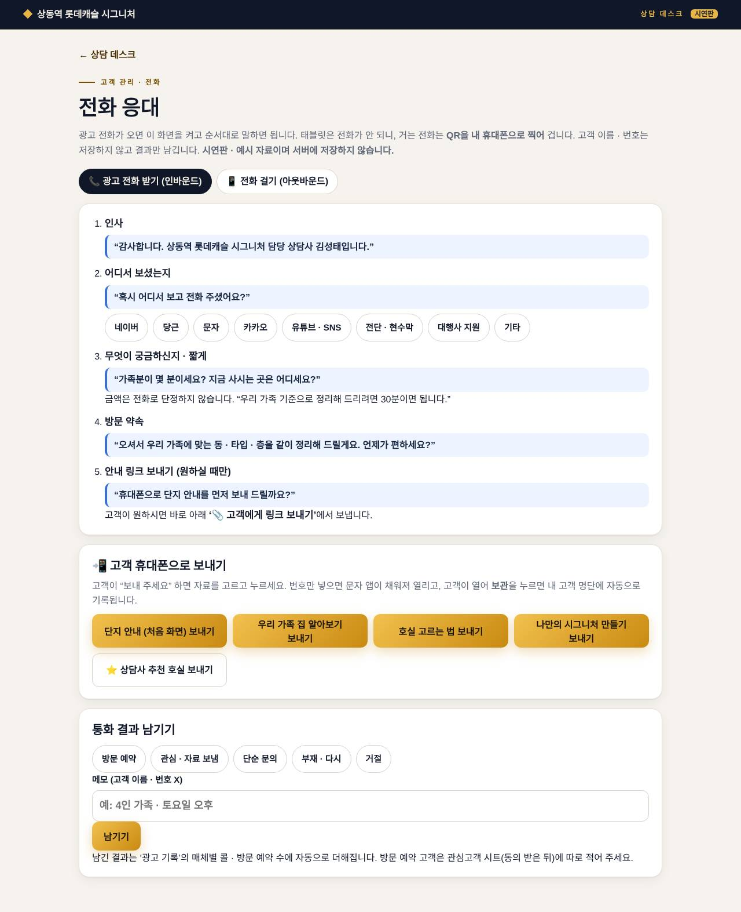
17 · 팀장 · 직원
워킹 대기 순번
팀장이 인포메이션 호출을 받아 팀원에게 알림(B to C 단계).
- 우리 팀 순번 1~5대기 · 소속(총괄 · 본부 · 팀) · 직함 이름
- 1대기에게 워킹 알림 보내기 · 1대기 받음 완료 → 자동 당김
- 지정 고객(지명 · 계약자 방문) 보내기
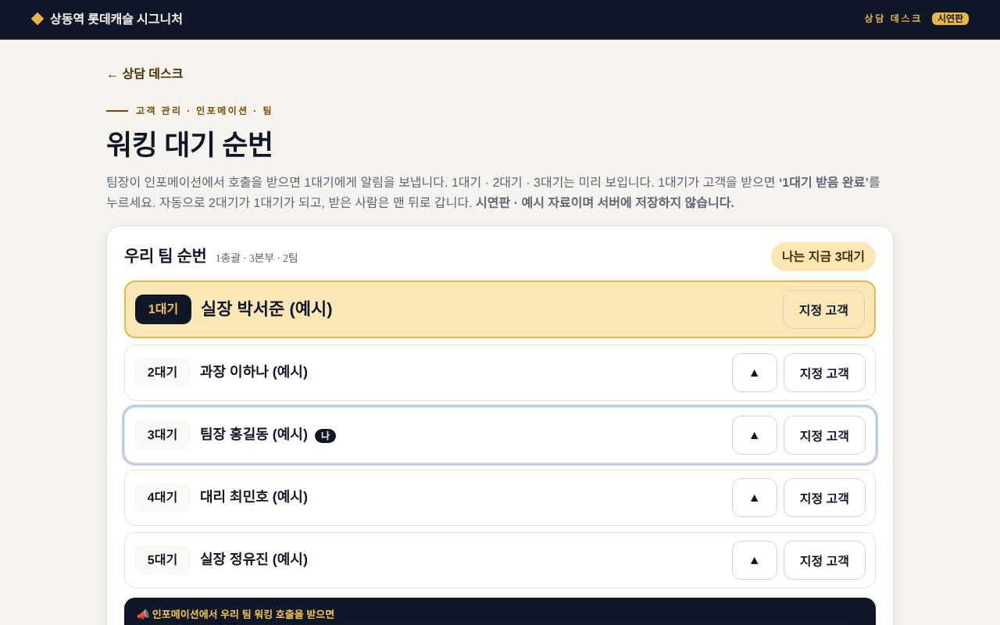
18 · 팀원 (태블릿 · 휴대폰)
팝업 알림
지명 고객 · 워킹 배정 · 1대기 차례 · 못 받음.
- 소리 · 진동 · 음성 읽기 · 확인해야 꺼짐
- 태블릿 · 휴대폰 함께 울림 · 한쪽에서 확인하면 둘 다 꺼짐
- 못 받아요 → 팀장에게 알림
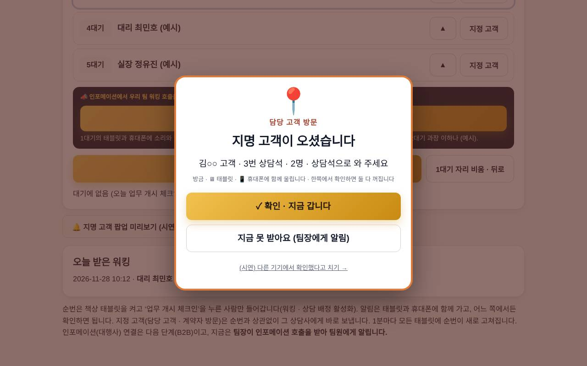
19 · 팀장 (숫자) · 직원 (화법만)
현장 단계 · 상담 화법
팀장이 계약 세대 · 고객층을 넣으면 초기 · 중기 · 후기 자동 판정 → 팀원 상담 화면 화법이 바뀜.
- 1,859세대 중 1,000세대 계약 → 중기(시연값)
- 층 구간별 성격(고층 거의 소진 · 중저층 여유) · 현황판 기준 추정
- 단계별 고객 질문 · 핵심 · 단계별 할 말 · 반론 · 클로징 · 하지 않는 말
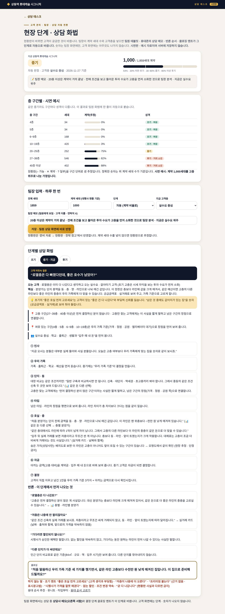
20 · 상담사
인근 단지 비교표
공고 · 청약홈 · 국토교통부 실거래 등 공인 자료만 · 확인 상태 표시.
- 분양 단지 비교(84㎡ 분양가 · 규모 · 역 · 입주 · 공고일)
- 대장 단지 실거래 층대별(원자료 대조 필요 표시) · 중기 브리핑 요약
- 객관적 비교 화법 · 하지 않는 말(비방 금지)
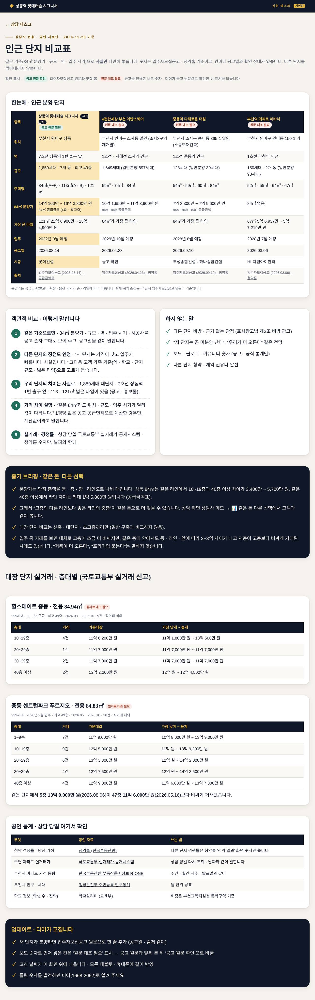
21 · 팀장 · 직원
공지사항 · 날짜별 보관함
동 · 타입 · 층 · 역할별 수수료 공지 · 확인 기록.
- 지금 공지 / 📚 날짜별 보관함(지난 · 내려진 공지 검색)
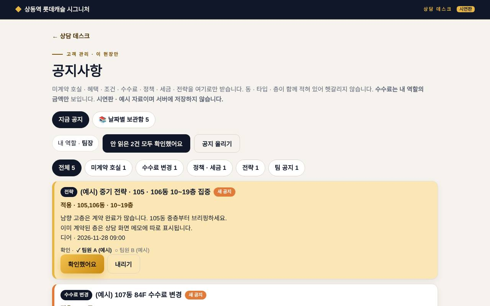
22 · 상담사
수수료 청구서 (예시 양식)
계약 완료 호실 · 공지된 수수료 자동 · 대행사 양식 받으면 교체.
- 세전 · 소득세 3% · 지방소득세 0.3% · 지급 예정액 · 서명 · 인쇄
- 계좌번호는 앱에 입력하지 않음
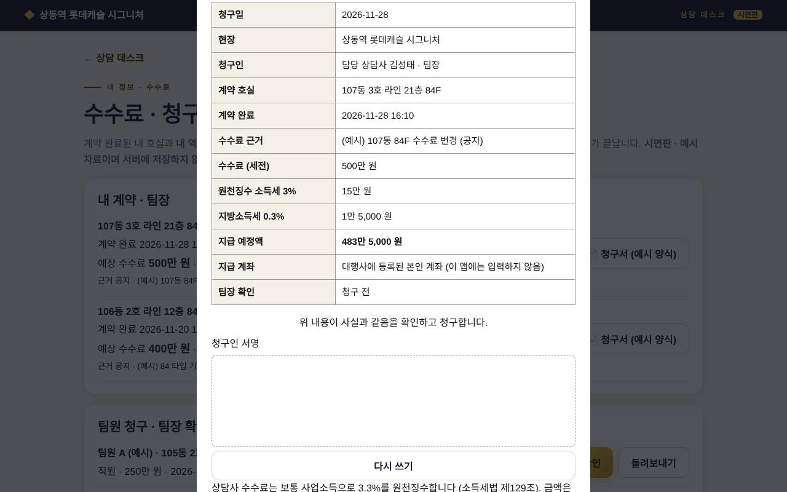
23 · 상담사
🔔 알림 설정 · 어디서든 받기
업무 개시 체크인 뒤 밤 9시까지 태블릿 · 휴대폰 어디서든.
- 이 기기 알림 켜기 · 시험 알림 · 음성 읽기 · 업무 종료
- 안드로이드 사이트별 특별 벨소리 설정 방법
- 단계표: 지금(화면 열림) → Firebase 연결(닫혀도) → 앱 포장(재난문자처럼) → 문자 · 알림톡
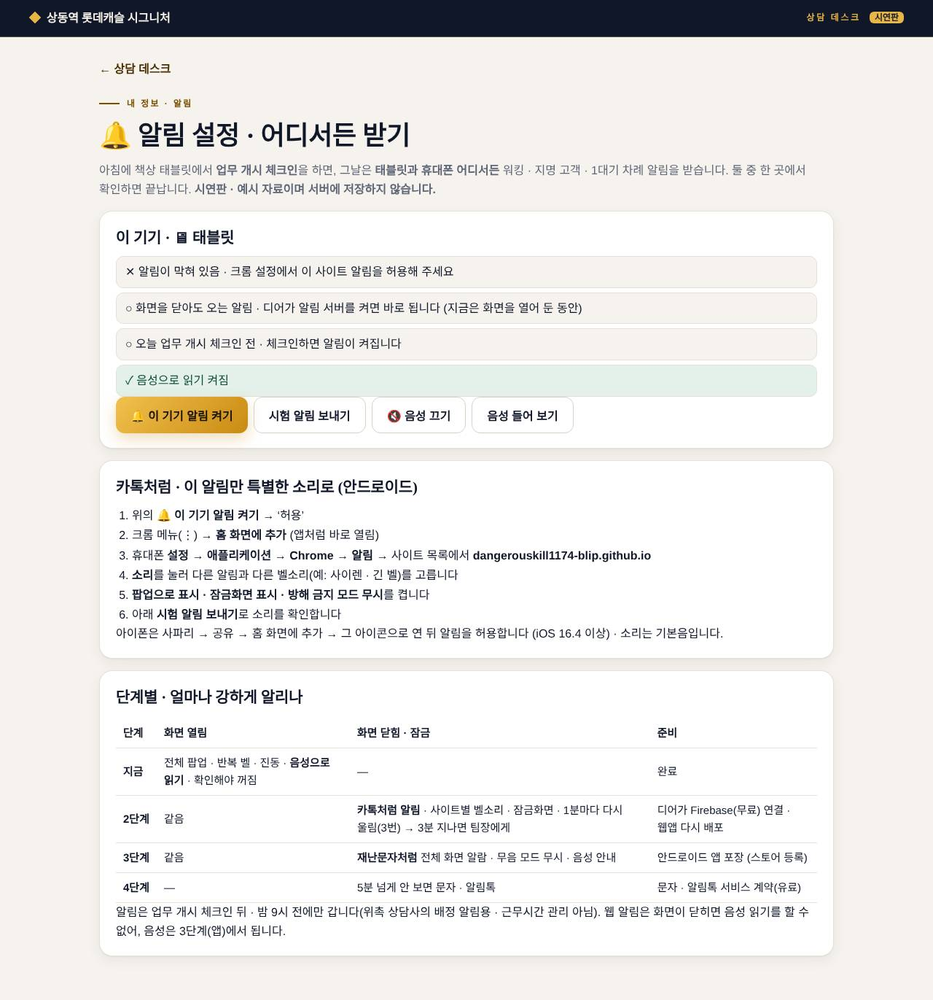
24 · 상담사 (이 기기)
🗂 상담 고객 보관함
새 고객 전에 지금 상담을 먼저 저장 → 지울지는 상담사가 결정.
- 날짜별 · 찾기 · ★ 보관 · 메모 · 이어서 상담 · 결과지 보기
- 90일 지나면 지울지 물어봄 · 이름 · 연락처 저장 안 함
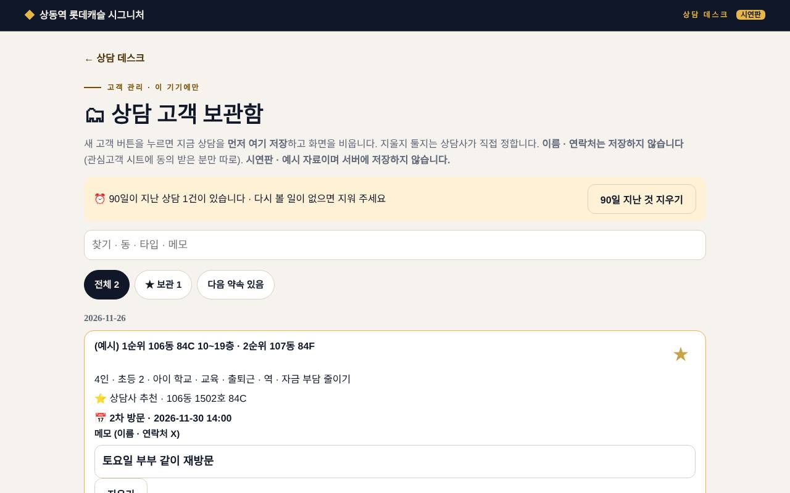
25 · 상담사 휴대폰
휴대폰 첫 화면
태블릿과 같은 기능 · 휴대폰 크기에 맞춤.
- 업무 개시 체크인 버튼 없음(“업무 개시는 책상 태블릿에서”)
- 알림 · 전달 · 내 고객은 휴대폰에서도 같음
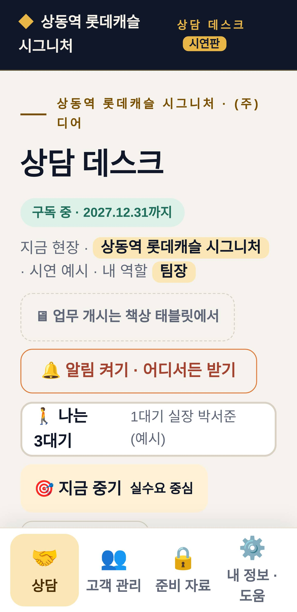
사진 속 이름 · 번호 · 호실 진행 · 판매 숫자는 모두 시연용 예시입니다. 실거래 · 분양가는 입주자모집공고 · 국토교통부 실거래 신고 기준이며 일부는 원자료 대조 중입니다.